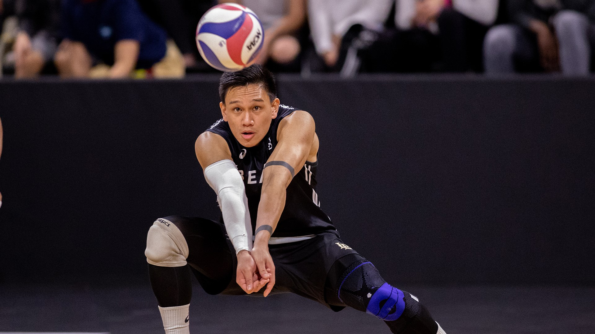

Owen Till - Bio
Bio
My name is Owen Till. I am a student at New England Tech in the Video Game Design and Development program. I also work a part-time job at Texas Roadhouse. My goal is to make Video Games that people will eventually call some of the best. The main genre of games I plan on making is Metroidvania Action/Adventure. I have gotten 2 Gold Tier awards from Cyberpatriot, 1st and 2nd in the state. I also have my Cisco and Comptia Certification. I have played video games my whole life and am excited to further pursue my career in making them.
Schooling

- Hopkins Hill Elementary School
- Alan Shawn Feinstein Middle School
- Coventry High School
- New England Institute of Technology
Hobbies
- Playing Video Games
- Watching Anime
- Reading Manga
- Swimming
- Playing Volleyball
©, HTML/Javascript Class